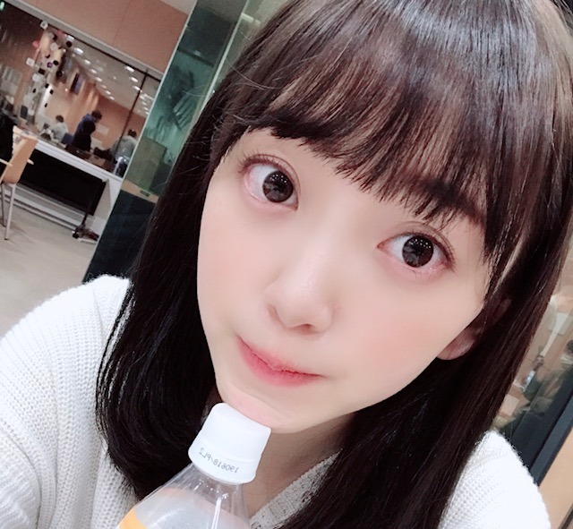
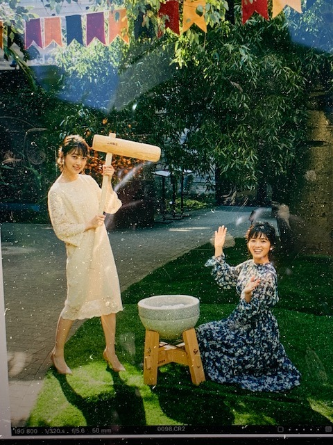

2018/1227Thuミディアム年末
こんにちは！
髪、少し切りました。
バサっと毛先を切って鎖骨あたりの長さのミディアムです
髪色も少し変えました〜
newヘアーでレコ大、紅白、CDTVに出ます☺︎
頑張る！


みなさんはもう仕事納めしたのかな...？
今日発売の with に桃子と載っています

クールポコさんや〜って言って
ずっと2人で笑ってました。笑
もしもOLだったら...シリーズです☺︎
フェミニンなヘアメイクと洋服が上品で私好みでした
withさんは初めてだったのですが
佐々木希さんが好きで、毎月見させていただいていたので嬉しかったです

見てね〜☺︎
では！
2018/12/27 10:48


コメント(378)
髪を少し切ったんだねー(*´꒳`*)
可愛いっす
年末までバタバタする日程かもだけど頑張ってねー（╹◡╹）♡
仕事は30日まであります(>_<)
withチェックするねー٩(๑❛ᴗ❛๑)۶
クールポコさんやね笑
桃ちゃんとの写真もありがと〜
今日仕事納めしてきたよー！
未央奈は大晦日までだね！
番組楽しみにしてるね♪
フレーフレー未央奈！！！❤️
ブログありがとう❗️
newヘアーな未央奈を楽しみに
年末を楽しむね✨
来年は未央奈にたくさん会いに行きたいです❗️
ゆうたんより
ブログありがとう☆
髪、軽い感じで良いよ♪
ワシも今年のうちに髪を切りたい〜
桃子とのクールポコ！
やっちまったなぁ〜笑笑
毎年、餅つきの手伝いに行っていたんだけど、
昨年末から、突いていないんだよね〜
何処かで餅つきをやっていないかなぁ〜笑
年末、忙しそうだね〜
健康に気をつけながら
楽しんでね〜♪
わたる⊿
overtureはどの写真も格好よくて特にPINEAPPLEが男前でした。あとCHERRYも面白かったです。街中の赤い物の前に行ってそれらより目立った写真を撮るのは、色と対決してるみたいで面白いと思いました。
withはしっかりした先輩然としてて服装も落ち着いてて良かったです。プリーツスカートのところの雰囲気が憧れの先輩って感じで好きです。餅つきまで出来て何だか縁起がいいですね。
そういえば堀さんが箸くんを受け継いだのなら、若様軍団に参加して失恋お掃除人を歌うことになるのでしょうか。もしそうなったら卒業を悲しむファンに推し変を勧める歌でもあったってことですね。卒業を悲しむファンに元気を取り戻させるのは、残された側のアイドルの仕事なのかもしれませんね。
では、いつもどおり堀さんの髪型にも注目しながらどの番組も見ますね。年始までがむしゃらに駆け抜けちゃってください。
あれ？それってもしかして未央奈かな？
そーいえば未央奈はいろんな髪型似合うよね！
じゃあ未央奈って素敵な女性じゃん！！
以上です笑
いつも応援してます！！
ミディアム年末。
お、髪切ったんだね！似合う。
newヘア〜
レコ大、紅白、CDTV楽しみ。
今年も出場できることがすごいことだと思うから大切にがんばってね！(^-^)
よっしゃ！テレビの前から応援の念を送っちゃる〜〜
きたぁー！度アップ〜〜！！
あごのせ未央奈♪
ありがと！かわいいなぁ。✌️
仕事納め。
学校は結構前にお休みになったよー！
社会人の方は今日あたりからの人が多いかな。
来年から大変だぁ。
未央奈は年始の休みがちょっとあるくらいなのかな？
(来週のレコメン！は一緒に聴けるね！)
おせち料理食べれるし箱根駅伝もあるし楽しみなこと多いよね！
ちょ、笑った。大笑い。
まさかこのタイミングでポコ未央奈が登場するとは。笑
withさん、今日ちらっと探したけど見つからなかったから今度チェックするよん♪
そうそう！今日乃木坂週刊プレイボーイ買ってプリン会の湯河原旅の記事見たよ。
写真から伝わる楽しそうなプリン会の3人と書いてある文章にめっちゃほっこり。
自惚れビーチ楽しそう！笑
マイペースな3人組最高〜！！
あと、第2回画伯王の記事読んだけどめっちゃ笑ったわ。ちゃんと考えがあって描いてるあたり、さすが画伯！！
革命の馬のTシャツほしい！笑
さてさて。
こっから年末で更に忙しいと思うけど、いつもの笑顔を見せてね〜！✨
心の底から応援しています。
緊張に負けるなよ〜！にやにや。
では！☺︎
こんにちは！
未央奈のミディアムヘアー大好きです♬最高に似合ってます♬(*´꒳`*)
最近は歌番組でポニーテールとか、写真グラビアとかでは髪の毛おろしてなかったから諸々の情報からグッと雰囲気が変わっててエクステかな？ってくらい未央奈はまとう雰囲気自由自在だね！
モバメでも足パンパンになったって言うくらいだもんね。お疲れ様 ^ ^ ステキなパフォーマンス期待しているよ！頑張ってね！！(*´-`)
未央奈のお顔。私が未央奈の1番大好きなパーツのおめめ。可愛い。(*´ω｀*)
未央奈の透き通ったお肌。
綺麗。(*´ω｀*)
すっと細いけどむにむにしたらむにむにするほっぺた。触りたい。(*´ω｀*)
未央奈可愛い！改めて可愛い！！超可愛い！！！
仕事納めはやっとしました。^ ^ 未央奈はあんまりお休みないという事で、大丈夫？？トップアイドルならでは。芸能人ならではの大変なポイントだね〜。
あーー！withですか！！
せっかくプレイボーイの方買いに行ったのに書い忘れちゃいました。(＞人＜;)明日あたりに買いに行くね ^ ^
上品なファッションの未央奈って本当大人びてて素敵なレディですね！
それにしても餅つきの写真だったり、既にお雑煮食べてて未央奈はすっかりお正月の雰囲気出てますね。実際はお仕事ラッシュで大変なんだよね。応援してるよ！！頑張ってね！！(*´ω｀*)
頑張って！
岐阜市はすっかり雪化粧していますよ。
実家に帰ってしますが，ポストの上に１０ｃｍくらい雪が積もっています。
昨日の夜は降っていなかったので深夜から明け方にかけて降り始めたんですかね。今も降っていますよ。
髪切ったんですね
レコ大、紅白楽しみにしてます！
前回はブログ「メロウ」にブログの感想を書きました！
時間→「No.247 2018年12月26日 11:30」
2代目箸くん、こんにちは！(笑)
「乃木中」で久々の変顔、面白くて可愛かったし、されたあとの「やだやだ！」も可愛かったです！2代目箸くんの活躍も期待しています！
「おしゃれイズム」ではもみの木をノコギリでかっこよく切っている姿を岩田さんにべた褒めされていましたね！大工を「大8」と言ったり気さくで喋りやすくて優しそうな印象でした！あと、朴葉って葉っぱがあるんですね！(初耳)
ブログ更新ありがとうございます！
髪切ったんですね！Newヘアーも可愛い～！
素材が良いと何でも似合うから羨ましいです！
そんなに見つめないでよ～(照)
3番組の出演ファイトです！勿論「CDTV」もそうですが、半世紀以上続いている長寿番組の「レコ大」は今回で2年連続、「紅白」は4年連続の出演ですね！改めて本当に凄いな～って思いました！今ではほとんどの音楽特番に出演されていますが、当たり前じゃなくて幸せな事なんだと思わないといけないなと思いました！
僕の年末年始はずっとお仕事です！
30日～02日→日勤、03日→休み
結果的に「レコ大」と「紅白」、「CDTV」も途中まで観られるのでまだ良かったです！
昨日の「マジ歌選手権」凄く面白かったです！今回は牛乳(実際はお茶)を口に含むのを初めてやったのですが、すぐ吹き出しました！
「with」も「乃木坂×週プレ2018」も・・・
了解です！了解です！了解道中膝栗毛！(笑)
ヒム子最高(笑) チェックさせて頂きます(笑)
しかも、今日は「8時だJ」のSPもあるし凄く楽しみです！それでは書店行ってきます！
ここまで読んで頂きありがとうございました！
毎日お仕事お疲れ様です！体調にはくれぐれも気を付けて頑張ってくださいね！
ではでは！
ミディアム堀ちゃんもめっちゃ可愛いですー！！
いつも堀ちゃんを見続けているので、流石にもう堀ちゃんの可愛さ慣れしたかな〜と思いきや、違う写真を見ると毎回の堀ちゃんの可愛さにびっくりしてしまいます( ´ ▽ ` )笑
レコ大紅白CDTVと、大変かと思いますが年末まで、年始から、堀ちゃんのことたくさん見させてもらいます！楽しみです！(o^^o)
桃ちゃんとの餅つき写真、何やら楽しそうな雰囲気でいいですね〜( ´ ▽ ` )♩
堀ちゃんがもしもOLだったら、もしも同じ会社にいたら、考えただけで仕事が手につかないです( ´ 〜 ` )笑
さてさて本格的に年の瀬ですね〜、今年もあと3日ですか( ´ ▽ ` )
今年は本当にたくさん堀ちゃんから幸せを貰った1年でした(o^^o)
楽しいときに堀ちゃんの姿やパフォーマンスを見て、さらに気持ちが元気になりました。
しんどいときに堀ちゃんのモバメやブログを見て癒されて、頑張ろうって思えました。
何気ない毎日で堀ちゃんのことを応援できて、楽しいな幸せだなって思えました。
今年は堀ちゃんのおかげで様々なことを頑張りきれました、決して大げさじゃない( ´ ▽ ` )
来年もそんな年にできるよう、今年以上にずっと堀ちゃんのことを応援し続けますね！(o^^o)
ではでは、また年内コメントできるか分かりませんがひとまず…
今年一年本当にありがとうございました(o^^o)
来年もどうぞよろしくお願いします！( ´ ▽ ` )
よいお年をー！！
レコ大も紅白もカウントダウンTVも全部見るよ
可愛い未央奈待ってるねー
やっぱり未央奈ちゃんはロングだな
なーにー！やっちまったなぁーー！！ヤラカシタヤラカシタ（笑）
元日は休みやけど、次の日は出勤
しかも派遣やから年末年始の手当出やん
でも、頑張るわ
クールポコだ！笑
コメントする